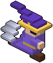
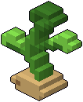
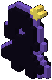
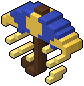
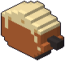
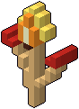
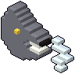

Balzo
In un attimo sei cinque metri più in là, verso dove stai andando.
- Famiglia
- Movimento
- Mana
- 25
- Cariche
- 2
- Ricarica
- 2 s
- Forza
- la lunghezza del balzo
- Si impara
- da subito
Oltre al dardo la principessa ha un incantesimo, sul tasto Spazio (A col controller): all'inizio il balzo. Se ne tiene uno alla volta, e ognuno è un modo diverso di salvarsi:
Gli incantesimi non sono più forti uno dell'altro: cambiano quello che fai, non quanto sei forte. Per questo non fanno crescere la vita dei nemici, e si cambiano gratis.
Ogni incantesimo ha le sue cariche: ogni lancio ne usa una, che torna pronta da sola dopo qualche secondo, una alla volta. Nel riquadro accanto all'oggetto attivo c'è l'icona dell'incantesimo in mano: nell'angolo quante cariche sono pronte, e quando sono finite l'icona si riaccende dal basso coi secondi che mancano; diventa rossa se il mana non basta. Un incantesimo che non trova dove andare (un tralcio verso il cielo, la pappa sopra una fossa) non parte e non costa niente. Nella fossa non se ne lanciano.
Quello che i doni, le stelle e i ricordi fanno al balzo lo fanno a qualunque incantesimo: meno mana, una carica in più, una ricarica più svelta, più forza. La forza ogni incantesimo la legge a modo suo: il balzo va più lontano, il sonno dura di più, l'anello di fuoco arriva più in là. Il danno di chi ferisce cresce invece col danno del dardo.
Il balzo c'è da subito. Gli altri incantesimi si imparano nello studio, nella stanza col portone da cui comincia la discesa: contro il muro di lato, appena entri, una libreria coi libri di magia, il tavolo magico, un alambicco e la sfera di cristallo.
Prima di tutto ci vuole il tavolo magico: si compra sulla lavagnetta delle promesse, come un ricordo. Non arriva subito: compare nella stanza quando torni dalla discesa dopo averlo comprato. E da solo non basta: sul tavolo manca il tomo magico, che si trova soltanto nella biblioteca, una stanza dei piani della torre del mago con dentro un labirinto di librerie (vedi Stanze). Trovato il tomo, sul tavolo si accendono le candele e le rune a terra, e con E si apre il tomo.
Nel tomo magico ogni incantesimo ha tre passi:
1. La traccia: un'impresa giù nel castello (un guardiano sconfitto, un obiettivo) mette l'incantesimo nel tomo e dice dove cercarne l'oggetto. 2. L'oggetto: ogni incantesimo ha l'oggetto della sua fiaba, da trovare scendendo in un posto preciso (un negozio, una stanza segreta, una stanza dorata…). C'è solo dopo la traccia, e finché non lo prendi; preso, è tuo anche se muori. 3. Lo studio: sulla formula si scrivono le promesse, anche un po' alla volta, tenendo premuto E. Pagata la formula, l'incantesimo è pronto quando ti svegli dopo la discesa seguente, comunque vada. Se ne studia uno alla volta.
Gli incantesimi imparati si scelgono nel tomo magico: E su quello che vuoi e lo porti con te. Vale subito, e resta quello anche nelle discese dopo.
Scendendo, dal piano 2, in circa un piano su tre (30%) nella prima stanza c'è un altare viola con un incantesimo imparato che non hai in mano: E per scambiarlo col tuo, che resta sull'altare, così finché sei nel piano puoi ripensarci. La pagina della fiaba di domani «Trovò una bacchetta» mette di sicuro l'altare sul piano che scegli. Morendo, o a una discesa nuova, torni a quello del tomo magico.

In un attimo sei cinque metri più in là, verso dove stai andando.

Un tralcio verso dove guardi, fino a 12 metri: se prende un muro o il pavimento ti tira lì; se prende un nemico, che non sia un guardiano, lo tira da te e lo fa barcollare.

Lasci la tua ombra dove sei. Entro 4 secondi, di nuovo, e torni da lei in un attimo, anche passando in mezzo ai nemici.

Una manciata di sabbia a ventaglio davanti a te, fino a 6 metri: chi la prende si addormenta per 3 secondi. Un guardiano la metà, e infuriato niente.

Dove guardi, fino a 12 metri, trabocca la pappa: per 6 secondi chi ci cammina dentro va pianissimo. Chi vola no.

Accendi un fiammifero: un anello di fuoco parte da te e corre fino a 4 metri. Chi tocca si brucia, prende fuoco e viene spinto via.

Soffi e soffi: un cono di vento davanti a te, fino a 5 metri, ferisce poco ma spinge via forte. Chi sbatte contro un muro si fa più male.